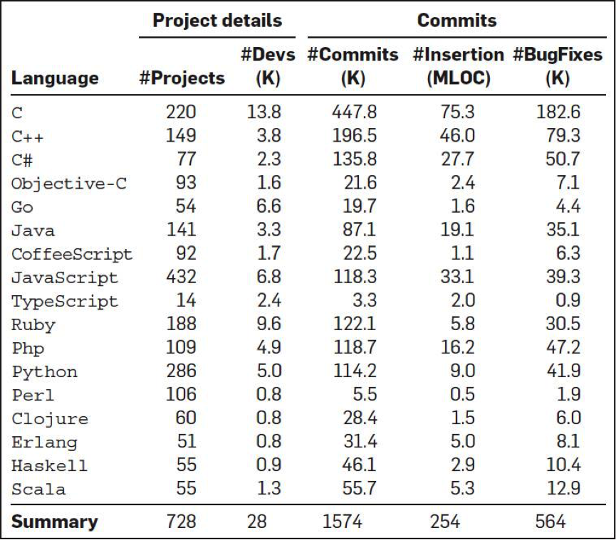
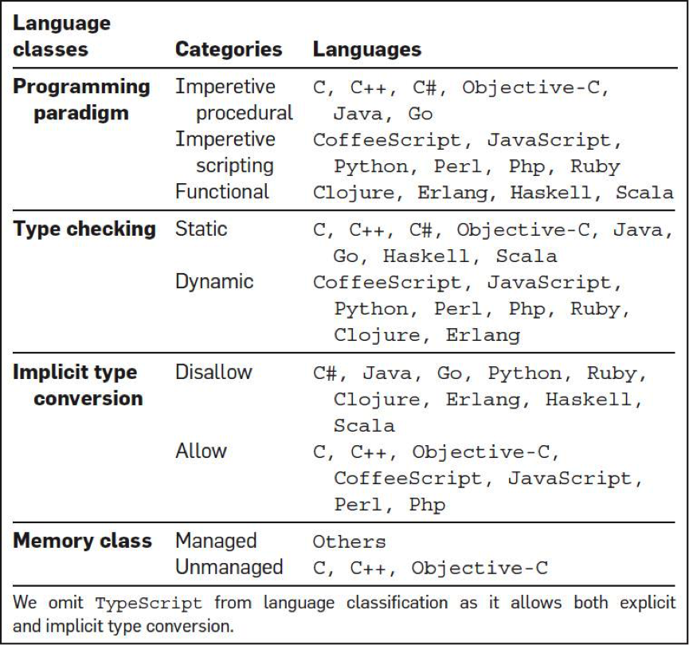
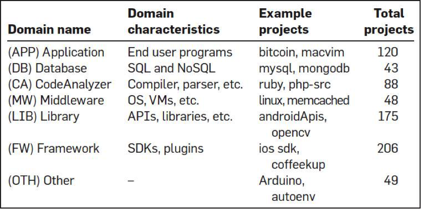
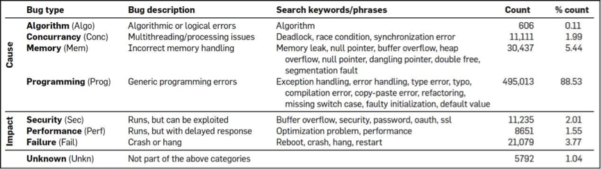
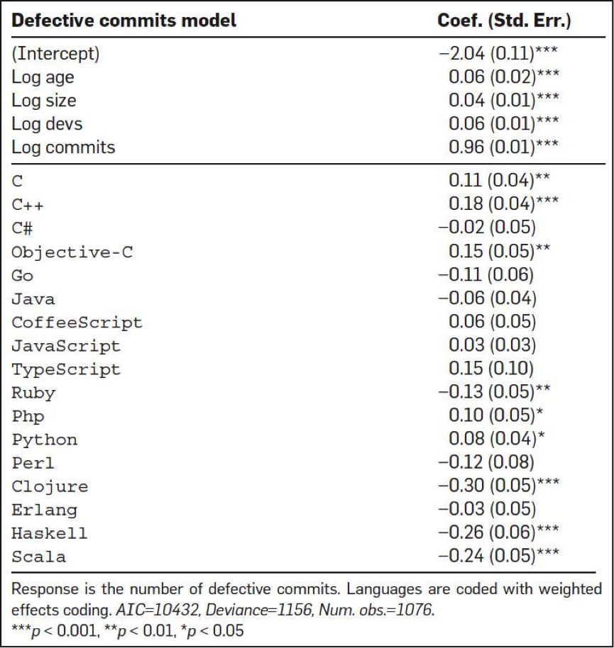
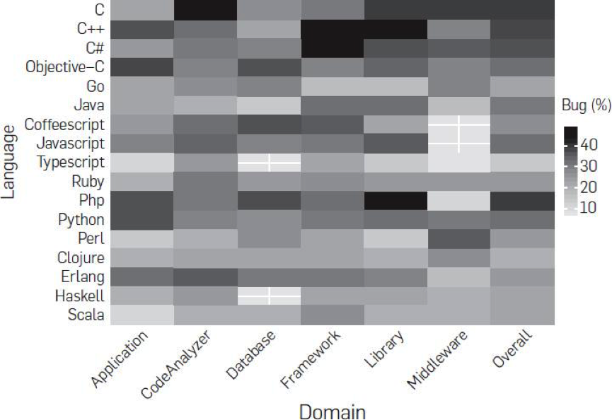
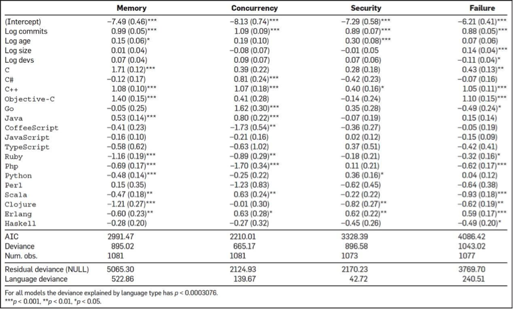

- 000 开篇词 洞悉技术的本质，享受科技的乐趣.md
- 001 程序员如何用技术变现（上）.md
- 002 程序员如何用技术变现（下）.md
- 003 Equifax信息泄露始末.md
- 004 从Equifax信息泄露看数据安全.md
- 005 何为技术领导力.md
- 006 如何拥有技术领导力.md
- 007 推荐阅读：每个程序员都该知道的事.md
- 008 Go语言，Docker和新技术.md
- 009 答疑解惑：渴望、热情和选择.md
- 010 如何成为一个大家愿意追随的Leader？.md
- 011 程序中的错误处理：错误返回码和异常捕捉.md
- 012 程序中的错误处理：异步编程和最佳实践.md
- 013 魔数 0x5f3759df.md
- 014 推荐阅读：机器学习101.md
- 015 时间管理：同扭曲时间的事儿抗争.md
- 016 时间管理：投资赚取时间.md
- 017 故障处理最佳实践：应对故障.md
- 018 故障处理最佳实践：故障改进.md
- 019 答疑解惑：我们应该能够识别的表象和本质.md
- 020 分布式系统架构的冰与火.md
- 021 从亚马逊的实践，谈分布式系统的难点.md
- 022 分布式系统的技术栈.md
- 023 分布式系统关键技术：全栈监控.md
- 024 分布式系统关键技术：服务调度.md
- 025 分布式系统关键技术：流量与数据调度.md
- 026 洞悉PaaS平台的本质.md
- 027 推荐阅读：分布式系统架构经典资料.md
- 028 编程范式游记（1）- 起源.md
- 029 编程范式游记（2）- 泛型编程.md
- 030 编程范式游记（3） - 类型系统和泛型的本质.md
- 031 Git协同工作流，你该怎样选.md
- 032 推荐阅读：分布式数据调度相关论文.md
- 033 编程范式游记（4）- 函数式编程.md
- 034 编程范式游记（5）- 修饰器模式.md
- 035 编程范式游记（6）- 面向对象编程.md
- 036 编程范式游记（7）- 基于原型的编程范式.md
- 037 编程范式游记（8）- Go 语言的委托模式.md
- 038 编程范式游记（9）- 编程的本质.md
- 039 编程范式游记（10）- 逻辑编程范式.md
- 040 编程范式游记（11）- 程序世界里的编程范式.md
- 041 弹力设计篇之“认识故障和弹力设计”.md
- 042 弹力设计篇之“隔离设计”.md
- 043 弹力设计篇之“异步通讯设计”.md
- 044 弹力设计篇之“幂等性设计”.md
- 045 弹力设计篇之“服务的状态”.md
- 046 弹力设计篇之“补偿事务”.md
- 047 弹力设计篇之“重试设计”.md
- 048 弹力设计篇之“熔断设计”.md
- 049 弹力设计篇之“限流设计”.md
- 050 弹力设计篇之“降级设计”.md
- 051 弹力设计篇之“弹力设计总结”.md
- 052 区块链技术 - 区块链的革命性及技术概要.md
- 053 区块链技术 - 区块链技术细节 - 哈希算法.md
- 054 区块链技术 - 区块链技术细节 - 加密和挖矿.md
- 055 区块链技术 - 去中心化的共识机制.md
- 056 区块链技术 - 智能合约.md
- 057 区块链技术 - 传统金融和虚拟货币.md
- 058 管理设计篇之分布式锁.md
- 059 管理设计篇之配置中心.md
- 060 管理设计篇之边车模式.md
- 061 管理设计篇之服务网格.md
- 062 管理设计篇之网关模式.md
- 063 管理设计篇之部署升级策略.md
- 064 性能设计篇之缓存.md
- 065 性能设计篇之异步处理.md
- 066 性能设计篇之数据库扩展.md
- 067 性能设计篇之秒杀.md
- 068 性能设计篇之边缘计算.md
- 069 程序员练级攻略（2018）：开篇词.md
- 070 程序员练级攻略（2018）：零基础启蒙.md
- 071 程序员练级攻略（2018）：正式入门.md
- 072 程序员练级攻略（2018）：程序员修养.md
- 073 程序员练级攻略（2018）：编程语言.md
- 074 程序员练级攻略：理论学科.md
- 075 程序员练级攻略（2018）：系统知识.md
- 076 程序员练级攻略（2018）：软件设计.md
- 077 程序员练级攻略（2018）：Linux系统、内存和网络.md
- 078 程序员练级攻略（2018）：异步IO模型和Lock-Free编程.md
- 079 程序员练级攻略（2018）：Java底层知识.md
- 080 程序员练级攻略（2018）：数据库.md
- 081 程序员练级攻略（2018）：分布式架构入门.md
- 082 程序员练级攻略（2018）：分布式架构经典图书和论文.md
- 083 程序员练级攻略（2018）：分布式架构工程设计.md
- 084 程序员练级攻略（2018）：微服务.md
- 085 程序员练级攻略（2018）：容器化和自动化运维.md
- 086 程序员练级攻略（2018）：机器学习和人工智能.md
- 087 程序员练级攻略（2018）：前端基础和底层原理.md
- 088 程序员练级攻略（2018）：前端性能优化和框架.md
- 089 程序员练级攻略（2018）：UIUX设计.md
- 090 程序员练级攻略（2018）：技术资源集散地.md
- 091 程序员面试攻略：面试前的准备.md
- 092 程序员面试攻略：面试中的技巧.md
- 093 程序员面试攻略：面试风格.md
- 094 程序员面试攻略：实力才是王中王.md
- 095 高效学习：端正学习态度.md
- 096 高效学习：源头、原理和知识地图.md
- 097 高效学习：深度，归纳和坚持实践.md
- 098 高效学习：如何学习和阅读代码.md
- 099 高效学习：面对枯燥和量大的知识.md
- 100 高效沟通：Talk和Code同等重要.md
- 101 高效沟通：沟通阻碍和应对方法.md
- 102 高效沟通：沟通方式及技巧.md
- 103 高效沟通：沟通技术.md
- 104 高效沟通：好老板要善于提问.md
- 105 高效沟通：好好说话的艺术.md
- 106 加餐 谈谈我的“三观”.md
- 107 结束语 业精于勤，行成于思.md
007 推荐阅读：每个程序员都该知道的事
在专栏开篇词中，我提到，在每个月月中，我会推荐一些有价值的内容，供你参考。这个月，我将为你推荐五篇阅读文章，这五篇文章我觉得都是比较不错的经验总结，是我们每一个技术人员都需要知道的东西。它们分别是：
- Stack Overflow 上开出来的一个经典书书单；
- 美国某大学教授给计算机专业学生的一些建议，其中有很多的资源；
- LinkedIn 的高效代码复查实践，很不错的方法，值得你一读；
- 一份关于程序语言和 bug 数相关的有趣的报告，可以让你对各种语言所有了解；
- 最后是一本 C++ 性能优化的非常有价值的电子书。
每个程序员都应该要读的书
在 Stack Overflow 上有一个问题 What is the single most influential book every programmer should read，网址为： https://stackoverflow.com/questions/1711/what-is-the-single-most-influential-book-every-programmer-should-read
虽然这个问题被关闭了，但是这是一个非常热门的问题。排在第一个的人给了一大串书的列表，看上去着实吓人，不过都是一些相当经典相当有影响力的书，在这里我重罗列一些我觉得你必需要看的。
-
《代码大全》虽然这本书有点过时了，而且厚到可以垫显示器，但是这是一本绝对经典的书。
-
《程序员修练之道》这本书也是相当的经典，我觉得就是你的指路明灯。
-
《计算机的构造和解释》经典中的经典，必需读的书。
-
《算法导论》美国的本科生教材，这本书应该也是中国计算机学生的教材。
-
《设计模式》这本书是面向对象设计的经典书。
-
《重构》代码坏味道和相应的代码的最佳实践。
-
《人月神话》这本书可能也有点过时了。但还是经典书。
-
《代码整洁之道》细节之处的效率，完美和简单。
-
《Effective C++》/《More Effective C++》C++ 中两本经典得不能再经典的书。也许你觉得 C++ 复杂，但这两本书中带来对代码稳定性的探索方式让人非常受益，因为这种思维方式同样可以用在其它地方。以至于各种模仿者，比如《Effective Java》也是一本经典书。
-
《Unix 编程艺术》、《Unix 高级环境编程》也是相关的经典。
还有好多，我就不在这里一一列了。你可以看看其它的答案，我发现自己虽然读过好多书，但也有好些书没有读过，这个问答对我也很有用。
每个搞计算机专业的学生应有的知识
What every computer science major should know，每个搞计算机专业的学生应有的知识，网址为：http://matt.might.net/articles/what-cs-majors-should-know/
本文作者马修·迈特（Matthew Might）是美国犹他大学计算机学院的副教授，2007 年于佐治亚理工学院取得博士学位。计算机专业的课程繁多，而且随着时代的变化，科目的课程组成也在不断变化。如果不经过思考，直接套用现有的计算机专业课程列表，则有可能忽略一些将来可能变得重要的知识点。为此，马修力求从四个方面来总结，得出这篇文章的内容。
- 要获得一份好工作，学生需要知道什么？
- 为了一辈子都有工作干，学生需要知道什么？
- 学生需要知道什么，才能考进研究生院？
- 学生需要知道什么，才能对社会有益？
这篇文章不仅仅对刚毕业的学生有用，对有工作经验的人同样有用，这里我把这篇文章的内容摘要如下。
首先，对于我们每个人来说，作品集（Portfolio）会比简历（Resume）更有参考意义。所以，在自己的简历中应该放上自己的一些项目经历，或是一些开源软件的贡献，或是你完成的软件的网址等。最好有一个自己的个人网址，上面有一些你做的事，自己的技能，经历，以及你的一些文章和思考会比简历更好。
其次，计算机专业工作者也要学会与人交流的技巧，包括如何写演示文稿，以及面对质疑时如何与人辩论的能力。
最后，他就各个方面展开计算机专业人士所需要的硬技能：工程类数学、Unix 哲学和实践、系统管理、程序设计语言、离散数学、数据结构与算法、计算机体系结构、操作系统、网络、安全、密码学、软件测试、用户体验、可视化、并行计算、软件工程、形式化方法、图形学、机器人、人工智能、机器学习、数据库，等等。详读本文可以了解计算机专业知识的全貌。
这篇文章的第三部分简直就是一个知识资源向导库，给出了各个技能的方向和关键知识点，你可以跟随着这篇文章里的相关链接学到很多东西。
LinkedIn 高效的代码复查技巧
LinkedIn’s Tips for Highly Effective Code Review，LinkedIn 的高效代码复查技巧，网址为：https://thenewstack.io/linkedin-code-review/
对于 Code Review，我有一篇文章 《从 Code Review 谈如何做技术》，讲述了为什么 Code Review 是一件很重要事情。今天推荐的这篇文章是 LinkedIn 公司的相关实践。
这篇文章介绍了 LinkedIn 公司内部实践的 Code Review 形式。具体来说，LinkedIn 的代码复查有以下几个特点。
- 从 2011 年开始，强制要求在团队成员之间做代码复查。Code Review 带来的反馈意见让团队成员能够迅速提升自己的技能水平，这解决了 LinkedIn 各个团队近年来因迅速扩张带来的技能不足的问题。
- 通过建立公司范围的 Code Review 工具，这就可以做跨团队的 Code Review。既有利于消除 bug，提升质量，也有利于大家对代码的学习和技能的传播。
- Code Review 的经验作为员工晋升的参考因素之一。
- Code Review 的一个难点是，Reviewer 可能不了解某个修改的背景和目的。所以 LinkedIn 要求代码签入版本管理系统前，就对其做清晰的说明，以便复查者了解其目的，促进 Review 的进行。
我认为，这个方法实在在太赞了。因为，我看到很多时候，Reviewer 都会说不了解对方代码的背景或是代码量比较大而无法做 Code Review，然而，却没有找到相应的方法解决这个问题。
LinkedIn 对提交代码写说明文档这个方法是一个非常不错的方法，因为代码提交人写文档的过程其实也是重头梳理的过程。我的个人经验是，写文档的时候通常会发现自己把事儿干复杂了，应该把代码再简化一下，于是就会回头去改代码。是的，写文档就是在写代码。
- 有些 Code Review 工具所允许给出的反馈只是代码怎样修改以变得更好，但长此以往会让人觉得复查提出的意见都表示原先的代码不够好。为了提高员工积极性，LinkedIn 的代码复查工具允许提出“这段代码很棒”之类的话语，以便让好代码的作者得到鼓励。我认为，这个方法也很赞，正面鼓励的价值也不可小看。
- 为 Code Review 的结果写出有目的性的注释。比如“消除重复代码”，“增加了测试覆盖率”，等等。长此以往也让团队的价值观得以明确。
- Code Review 中，不但要 Review 提交者的代码，还要 Reivew 提交者做过的测试。除了一些单元测试，还有一些可能是手动的测试。提交者最好列出所有测试过的案例。这样可以让 Reviewer 可以做出更多的测试建议，从而可以提高质量。
- 对 Code Review 有明确的期望，不过分关注细枝末节，也不要炫技，而是对要 Review 的代码有一个明确的目标。
编程语言和代码质量的研究报告
A Large-Scale Study of Programming Languages and Code Quality in GitHub，编程语言和代码质量的研究报告，网址为： https://cacm.acm.org/magazines/2017/10/221326-a-large-scale-study-of-programming-languages-and-code-quality-in-github/
这是一项有趣的研究。有四个人从 Github 上分析了 728 个项目，6300 万行代码，近 3 万个提交人，150 万个 commits，以及 17 种编程语言（如下图所示），然后，他们想找到编程语言对软件质量的影响。

然后，他们还对编程语言做了一个分类，想找到不同类型的编程语言的 bug 问题。如下图所示：

以及，他们还对这众多的开源软件做了个聚类，如下图：

对 bug 的类型也做了一个聚类，如下图：

其中分析的方法我不多说了。我们来看一下相关的结果。
首先，他们得出来的第一个结果是，从查看 bug fix 的 commits 的个数情况来看，C、C++、Objective-C、PHP 和 Python 中有很多很多的 commits 都是和 bug fix 相关的，而 Clojure、Haskell、Ruby、Scala 在 bug fix 的 commits 的数明显要少很多。
下图是各个语言出 bug 的情况。如果你看到是正数，说明高于平均水平，如果你看到是负数，则是低于平均水平。

第二个结论是，函数式编程语言的 bug 明显比大多数其它语言的要好很多。有隐式类型转换的语言明显产生的 bug 数要比强类型的语言要少很多。函数式的静态类型的语言要比函数式的动态类型语言的程序出 bug 的可能性要小很多。
第三，研究者想搞清是否 bug 数会和软件的领域相关。比如，业务型的，中间件型、框架、lib，或是数据库。研究表明，并没有什么相关性。下面这个图是各个语言在不同领域的 bug 率。

第四，研究人员想搞清楚 bug 的类型是否会和语言有关系。的确如此，bug 的类型和语言是强相关性的。下图是各个语言在不同的 bug 类型的情况。如果你看到的是正数，说明高于平均水平，如果你看到的是负数，则是低于平均水平。

也许，这份报告可以在你评估语言时有一定的借鉴作用。
电子书：《C++ 软件性能优化》
Optimizing Software in C++ - Agner Fog - PDF，C++ 软件性能优化， http://agner.org/optimize/optimizing_cpp.pdf
这本书是所有 C++ 程序员都应该要读的一本书。这本书从事无巨细地从语言层面，编译器层面，内存访问层面，多线程层面，CPU 层面……讲述了如果对软件性能的调优。实在是一本经典的电子书。
Agner Fog 还写了其它几本和性能调优相关的书（你可以到这个网址下载：http://www.agner.org/optimize/ ）
- Optimizing subroutines in assembly language: An optimization guide for x86 platforms
- The microarchitecture of Intel, AMD and VIA CPUs: An optimization guide for assembly programmers and compiler makers
- Instruction tables: Lists of instruction latencies, throughputs and micro-operation breakdowns for Intel, AMD and VIA CPUs
- Calling conventions for different C++ compilers and operating systems
我今天推荐的内容比较干，需要慢慢吸收体会，最好能借鉴到实践中用用，相信会有更多的感悟和收获。你还对哪些方面的内容感兴趣，欢迎留言给我。我后面收集推荐内容的时候，会有意识地关注整理。